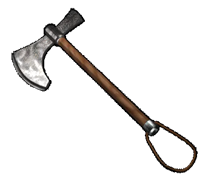

|
Боевой топор |
|
| Топор -- типичное
оружие пешего ратника XII века. В свое время
растущее господство конницы ненадолго сделало
топоры оружием плебеев, однако дальнейшее
усовершенствование доспехов и усиление пехоты
возродило популярность топоров как популярного
боевого оружия. Большинство всадников
предпочитало использовать топоры во время
затяжных кавалерийских боев, когда стандартное
длинное древковое оружие мешало борьбе при
тесной схватке двух групп бойцов. На территории Древней Руси было распространено три типа топоров: небольшие боевые топорики-молотки -- чеканы, довольно часто имевшие на себе замысловатые украшения, секиры, похожие на производственные топоры, но меньшие по размеру, и тяжелые и массивные рабочие топоры. Топоры двух первых групп как правило имели лезвия длиной то 9 до 15 см и шириной от 10 до 15 см, вес их не превышал 420-450 грамм. Лезвия рабочих топоров были более длинными - от 15 до 22 см, ширина лезвия - от 9 до 14 см. Весили они от 600 до 800 грамм. Усовершенствование топоров шло по пути создания лезвия, рассчитанного на максимально проникающий удар. В XII веке наблюдается единообразие в производстве топоров, типичными становятся чеканы и бородовидные секиры. |
|
Текст и
иллюстрации (c) 1997 Snowball Interactive Entertainment, Inc. |